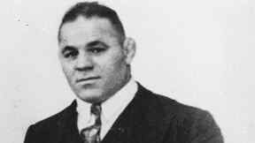
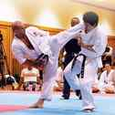
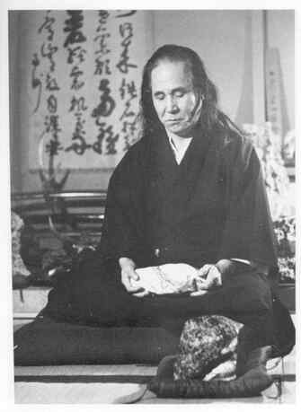

< < < Back
13 Martial Artists You Can Draw Inspiration From – Return Of Kings
Martial arts are more than regular sports, they are a way of life. They help you transcend the limits of your condition in order to achieve something that a regular human being could not. It perfectly fits masculinity, as it embodies hard work, constant self-improvement, and humility. Every time you step in the ring, you are willing to put your past victories and skills to the test.
I purposely did not include in this list the likes of Bruce Lee, Jet Li, Helio Gracie, and other Emelianenkos as they have been covered in detail everywhere and their influence is undeniable. Those present below embody different important aspects of the study of martial arts. Many are missing from this list but I narrowed it down to thirteen particularly influential figures.
1. Alexander Karelin (born in 1967)
The greatest Greco-Roman wrestler of all time. Born a 5.5 kg baby in Soviet Siberia, his father encouraged Karelin to take up boxing and then wrestling. At the peak of his career he was 1m93, 130 kilos, could bench press more than 200 kilos and would regularly put his fridge in a bear hug and bring it up and down his eight flights of stairs.
Three-time Olympic champion in Greco-Roman Wrestling, 9-time World champion and 12-time European champion, he remained 13 years undefeated in the heaviest weight class in the sport. He was known for his reverse body lift technique where he could pick up his 130kg+ opponent, hoist him in the hair and slam him on his shoulders. He inspired fear in most of his fellow competitors, who would systematically lie on the mat, in the hope of not being thrown around.
2. Dan Kolov (born Doncho Kolev Danev, 1892-1940)

Wrestler and Bulgarian national hero, known as the “King of Wrestling” or the “Lion of the Balkan.” He emigrated to America where he became a railroad worker. His unusual strength was discovered when people witnessed him twisting rails around his neck. Twice World champion, three times European champion, with between 1500 and 2000 victories in his career, he came to fame in the times when wrestling was dirty and unforgiving, far closer to modern-day MMA than to that WWF masquerade.
He became a millionaire but gave everything to charity. Even though he emigrated to America, for him, the homeland was sacred and he refused multiple times to become an American citizen. He often said “I feel strong because I am Bulgarian.”
3. The Great Gama (born Ghulam Muhammad, 1878-1960)
Son of a famous wrestler, he was already winning renowned tournaments when he was 10 years old. He became Champion of India, when it also included Pakistan, Nepal and Bangladesh. Then, having defeated everyone around, he sailed to England where he remained unchallenged and became world champion in 1910. In a career of over 50 years, he was never defeated.
His daily routine included up to one thousand jack-knife pushups and deep knee bends. His diet included as many as six chickens, 10 litres of milk, up to half a litre of ghee and almonds crushed into an edible mixture. Bruce Lee used elements from his training, so you know that the man was an authority.
4. William E. Fairbairn (1885-1960)
Martial arts legend from England. He was, among other things, the inventor of the riot police, the bulletproof vest, the smatchet and the tactical knife Fairbairn-Sikes used by the SAS. He survived over 600 non-training street fights in his 32 year-long career as a police officer and was said to be covered from face to ankle in scars from knife wounds. Enlisted underage in the Royal Marines. Learnt how to fight in Japan and Korea.
Fairbairn once was stabbed a dozen times and left for dead. He survived and became a policeman in the dangerous city of Shangai in the early 20th century. He also studied boxing, wrestling, kung fu, savate and received black belts in Judo and Jujitsu, while bringing a scientific approach to close combat.
He also created the fighting style “Defendu” and became instructor for the British Secret Service at 55. He was notably well-spoken, never swore nor drank. I strongly recommend his book: “Get tough!”
5. Sergey Badyuk (born in 1970)
Modern-day titan, Russian legend of FSB units and hand-to-hand combat instructor for the elite military group of the GRU. Master in Kyokushin, Muay Thai and Kung Fu, you can see him as comfortable in every style, kicking a tree in Thailand or practicing Tai Chi exercises in the Chinese mountains.
Known for his sense of humour and his will to share his knowledge, he always pushes his students to the limit. I remember one of the interviews that captured his spirit :
Basically, I am in this bar when suddenly, all these guys get in and want me dead. Had to think fast so I broke two tea glasses with a handle and start flailing in every direction trying to cut them, while progressing towards the exit and get out. Me or them, you know…
6. Ilias Iliadis (born Jarji Zviadauri in 1986)
Greek Judo practitioner. Born in Georgia to a family of skilled wrestlers and judokas, Ilias reached the top when he became Olympic champion after being three-time world champion.
His peculiar techniques are a delight to watch and display a mix of sheer strength and moves coming straight out his earlier study of Chidaoba, the Georgian national wrestling style, and the finesse acquired from the study of Judo. In addition to his talent, his vitality and good mood made him a household name in the world of international Judo.
7. Judd Reid (born in 1970)

Australian Kyokushin practitioner. When he was an 18-year old teenager, Judd’s master noticed the capacities and the fire that was burning in his young apprentice. His obsession was to leave for Japan and complete the famous “1000 days of training” under Mas Oyama.
Following the path of the warrior, Judd completed in 2011 the 100 man kumite (defeat 100 black belts in a row), defying the Japanese on their own turf. He is not alone in this feat but his determination, impressive physical conditioning, and will to travel like the martial artists of old is what sets him apart from the others. The documentary on his quest, “The Journey To The 100-Man fight” is a must watch.
8. Mas Oyama (born Choi Yeong-eui 1923-1998)
His hard fighting style lead to the creation of his own discipline: Kyokushin, probably the most realistic and efficient school of Karate. Legend has it that he shaved his head before retreating to the mountains to survive and train, and swore to come back only when his hair touched his shoulders.
Deeply influenced by the biography of the sword master Miyamoto Musashi, he wandered and defeated all the renowned combatants that Japan had at the time and any opponent that presented himself to him. He was known for his capacity to break large-sized pebbles bare-handed and fight bulls, breaking their horns before fracturing their skull with a single punch. He also fought against 300 fighters in 3 days.
9. Blagoi Ivanov (born in 1989)
Bulgarian Sambo practitioner (Mastersport and world champion), Judo and MMA fighter. His successful career as a sambist found its peak when he defeated Fedor Emelianenko, which is why he found himself under the spotlight.
In 2012, Ivanov got into a fight with a local criminal figure. Some can argue about who started the fight but for anyone, that has seen the fauna that lurks in your average Bulgarian upper-end club, it could be anyone. Blagoi was stabbed in the heart and rushed to hospital. After two life-threatening surgeries and being placed in an artificial coma, he survived, never gave up, and was back to the top MMA level a year and a half later.
10. Buakaw Banshamek (formerly Por Pramuk, born in 1982)
Thai boxing and K1 Champion, he is one of the most aggressive Muay Thai competitors to ever walk this Earth, but also possesses one of the most impressive physical condition ever seen on a Thai fighter. Possessing one of the hardest kicks in his category, he has been admired for his seriousness inside and outside the ring.
His impressive record, ruggedness and inventiveness in training methods made him famous. His training videos of kicking banana trees and running in the scorching heat of Thailand never fail to motivate me to go and hit the bag when I feel lazy and it is raining outside.
11. Andy Hug (1964-2000)
K1, Kyokushin and Seidokaikan champion. From his troubled childhood, the young Andy found solace in martial arts. His natural talent quickly showed and he started representing his native Switzerland in Kyokushinkai. He then became the first foreigner to reach the final of the World Open of Kyokushin Karate.
His impressive and varied kicking abilities, his speed and his trademark kakato-geri (axe kick) brought him fame. He even gained the admiration from the Nippons and the world as he could defeat Japanese karate specialists, beat skilled boxers and rout kickboxers from various nations with the same reactivity and pugnacity. He died at the young age of 35 of leukemia.
12. Masahiko Kimura (1917-1993)
Martial arts prodigy, he became fourth Dan of judo at the age of 15. By age 20, he became the All Japan Open Weight Judo champion, a title which he maintained in undefeated fashion for 13 years. He was known for his highly intense and difficult workouts, which at one point consisted of one thousand push-ups and nine-hours of practice daily.
His o-soto-gari (judo throw with opponents side by side) was so powerful that it caused concussions and his opponents regularly asked him not to use it. He started Karate has a way to strengthen his hands and became a master in a few styles in record time. He defeated the legendary Helio Gracie and the Kimura arm lock was named after his personal favourite technique.
13. Gogen Yamaguchi (1909-1989)

This karate master and student of Chojun Miyagi had from the first day of training only one objective in life: to be the strongest. He was nicknamed “The Cat” for his agility, small stature (just over 1.50 M) and flowing hair, but this was not what made him unique. He survived the Soviet labour camps, was a master of breathing techniques, enagaged in duels to the death, and from many accounts, could project an invisible force towards his opponent that would terrorize him, without saying a word.
This old mystic was an adept of extreme meditation. He would stay hours at a time under ice cold waterfalls, would summon spirits and supposedly killed a tiger with his bare hands.
A bonus extract of his biography:
When “leftist” groups started causing trouble at the University, Yamaguchi and his friends drove them off the Campus.
How can you not love the man?
Read More: Why Karate Is The Most Beta Martial Art